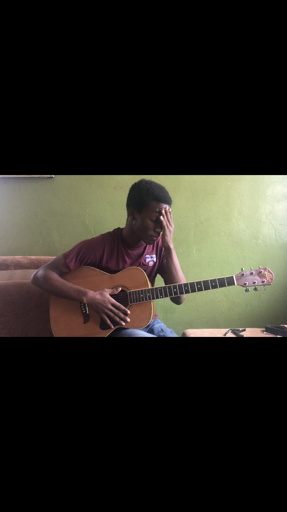

Interactive Audio & Architecture
Magnesynth
Electromagnetic actuation and a custom 3D-printed NeoPixel housing — sound as a fabricated object. Shown at Sound Kitchen, Sharjah.
Role: Instrument designer | Fabricator | Performer
Audio / Visual Player
Exhibition documentation lives with the acoustic sessions archive. Embed additional Sharjah clips here as they are published.
Fabrication Highlights
NeoPixel housing
Custom 3D-printed body routes light as a score — LEDs are not UI, they are timbre you can see.
Electromagnetic actuation
Coils drive physical vibration. The instrument is a circuit that insists on being touched.